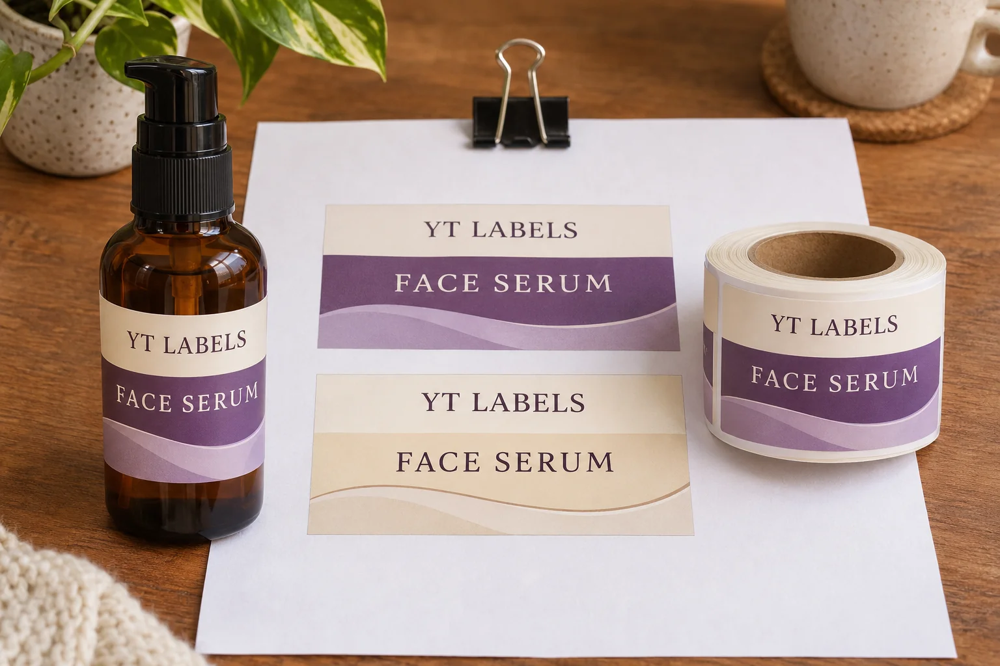
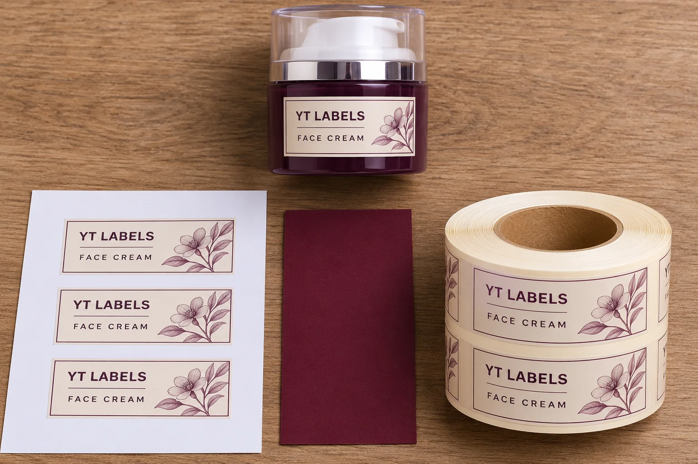

When a cosmetic label order changes after the quotation is accepted, ask the printer to identify the affected work before you authorize a replacement order. A new artwork file alone cannot tell you which material has been reserved, which tools have been made or what has already been printed. Confirm the current state and the actions available for each affected line.
Start by telling the printer exactly what needs to change and which job it affects. Request an acknowledgment of any hold you need. Treat the hold as pending until the supplier confirms it. Keep unaffected designs visible so a request to stop one version does not accidentally stop the whole range.

Find which commitment you are changing
Quote number, order line, artwork revision, construction and quantity form the starting record. State the change explicitly. For example, a new front-panel name changes artwork. A switch from matte to a particular foil finish may also affect preparation, stock or tooling. Ask the supplier to explain the actual affected work and its reported stage.
One example of a supplier workflow is SheetLabels.com's digital proof process. It provides distinct actions to approve the proof and to request changes. Your order's actual release and change conditions come from its quotation and accepted terms. Confirm the supplier's status before assuming that a requested change falls before its production release.
If the print file changes, use the revision reconciliation guide to establish the affected text and versions. Send that file reference with the commercial change request. The file comparison establishes what has changed visually. The order response establishes what can still be changed in production and at what revised scope.
Get the response line by line
| Line | Ask the supplier to confirm | Decision to record |
|---|---|---|
| Approved reference | Order line, current file and proposed replacement revision. | Which quantities and designs are included in the request. |
| Work and materials | Reported preparation, reserved stock, tools, partially completed or finished quantities. | Which stages can change and which cannot be assumed reversible. |
| Revised scope | Proposed restart, reproof, substitute, partial completion or other supported action with charges and timing. | Which option and conditions the buyer accepts. |
| Final authorization | New order or amendment reference and which old instructions are superseded. | Which lines remain held, continue unchanged or are released under the revised terms. |
Ask both parties to acknowledge the same revision and affected quantities. Keep the original order record and the accepted amendment together. Leave disputed or unconfirmed charges visible for the appropriate owner to resolve.

Compare the choices from the reported stage
Suppose a brand asks to change the name of a hypothetical serum before its design has been released. The supplier may be able to review the updated artwork and issue a new proof. Ask which preparation has been completed and what its current response means for the requested date.
Suppose instead one version is already printed and another is awaiting release. Ask for the separate quantities and treatment of each version. For affected finished rolls, decide how the old artwork will be identified and controlled with the relevant parties. The obsolete stock guide addresses that next decision. Keep the unaffected design on its accepted route if the supplier confirms it can proceed independently.
Compare a supported change proposal with retaining the accepted order only where the existing design still meets your requirement. Include separately quoted preparation and usable quantities. Hold the affected release when the supplier's reported state, revised reference, charges or order authorization remain unclear.
Prepare a specific label order change
Include the order reference, affected designs, approved and proposed artwork identifiers, quantities and requested hold or change. Ask for a response showing work already done and any revised release conditions. The form prepares a message. Send artwork through email or WhatsApp.
Prepare an order change inquiry